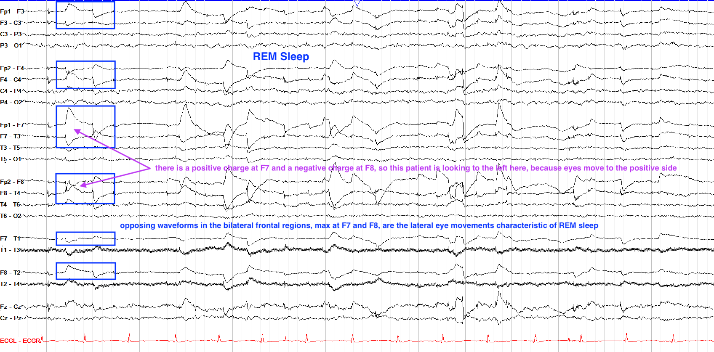

生物医学工程 | EEG分析 - 预处理

Organize Data｜整理数据
将导入的数据清洗为需要的结构，如选择数据类型（Matlab中有cell类型、多维度矩阵类型、structure类型等；Python中有元组tuple、列表list、字典dict、np.array、MNE数据结构等）
了解数据集的基本情况，有多少个channel，多少个病人，每个数据集存的都是什么，数据集有多大等等
Re-reference｜选择参考电极
网上获取或者EEG机器获取的通常是reference free的，因此我们需要re-reference。当然也可能EEG机器输出的时候就进行了硬件层面的reference。
论文中经常看到的EEG Montage指的是EEG的电信号如何被re-reference。常见的reference方法有以下几种，但我们使用最多的是longitudinal bipolar（又称作double banana）：
- 单极参考（Unipolar Reference）：每个电极相对于参考电极进行测量。这种Montage常用于研究特定电极的活动或事件相关电位（ERPs）。常见的参考电极位置有mastoid双耳（下图左下角），Cz（下图右下角），Infinity/Zero Reference（没有reference），脖子等
- 双极参考（Bipolar Reference）：相邻电极之间的差值。这种Montage可用于研究局部电位差异，如观察脑区间的同步性。下图第一排为常见的几种bipolar montage map
1
EEG_ref = -diff(EEG)
1
EEG_ref = -np.diff(EEG, axis=0)
- 平均参考（Average Reference）：所有电极信号的平均值作为参考。这种Montage用于研究整体脑电活动，但可能会受到电极数目和位置的影响。尤其适用于当电极数量大于100个的时候
1
EEG_ref = EEG-repmat(mean(EEG,1),size(EEG,1),1)
1
EG_ref = EEG - np.tile(np.mean(EEG, axis=0), (EEG.shape[0], 1))
- 脑区Montage（Region-of-Interest Montage）：将特定脑区的电极进行连接，以关注特定脑区的活动。
注意：
- MEG是reference-free的
- Surface Laplacian是reference independent的
提取epoch
【选长度】相当于把长长的EEG数据切成一块一块的，我们需要选择在哪里下刀子，且多长等等以下是需要注意的点：
- t=0选择在哪里？比如刺激开始的时候，事件最早发生的时候，或者最感兴趣的事件发生的时候，比如按按钮等等
- t=0之前需要保留的时间长度是多少？
- t=0之后需要保留的时间长度是多少？
注意随着我们截取的epoch变长，不同epoch之间可能存在重叠
【留buffer】如果我们后续要对epoch进行time- frequency分析，或者使用滤波器，则需要留一定的边界余量buffer。通常是想分析的最低频率对应时间长度的3倍，如2H的活动则留1500ms。之所以要留buffer，是因为使用时域滤波器的时候存在“边际效应edge effect”，直观表现是epoch的两端数值直接起飞
【选数量】尽量保证不同情况下的trial数量一致，否则在计算功率或者相位的时候可能导致差异。如果trial数量真的不一样，则可以随机选择N个trial，或者取相似条件下的N个trial
移除Artifacts
通过大致浏览手头的数据，判断如何移除artifacts。常见的办法是用滤波器或者ICA，甚至可以删除部分的数据（整个epoch或者只有受影响的部分，所有的channel或者只有受影响的channel）
MNE有检测部分artifacts的代码：https://mne.tools/dev/auto_tutorials/preprocessing/10_preprocessing_overview.html
教程：https://neuraldatascience.io/7-eeg/erp_artifacts.html
眨眼｜eye blinking
眼动｜eye movement｜Oculomotor

电流噪声

电极移动

肌电信号伪影

出汗

咀嚼或者下颚运动

心脏伪影

胸部运动

手部运动
声明：此blog内容为上课笔记，仅为分享使用。部分图片和内容取材于课本、老师课件、网络。如果有侵权，请联系aursus.blog@gmail.com删除。